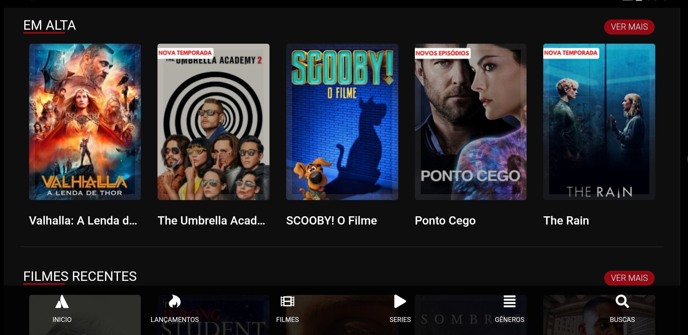

pobreflix
é uma iniciativa brilhante que busca democratizar o acesso ao entretenimento, oferecendo conteúdo de qualidade de forma acessível para todos os públicos, independente de sua condição financeira. Essa plataforma é um exemplo inspirador de como a tecnologia pode ser usada para promover inclusão e diversidade cultural, permitindo que pessoas de diferentes realidades possam desfrutar de momentos de lazer e aprendizado através do streaming.
interflix
- é um universo de entretenimento sem limites. Com uma vasta biblioteca de filmes, séries, documentários e programas originais, Interflix oferece uma experiência única de imersão para todos os gostos e idades.